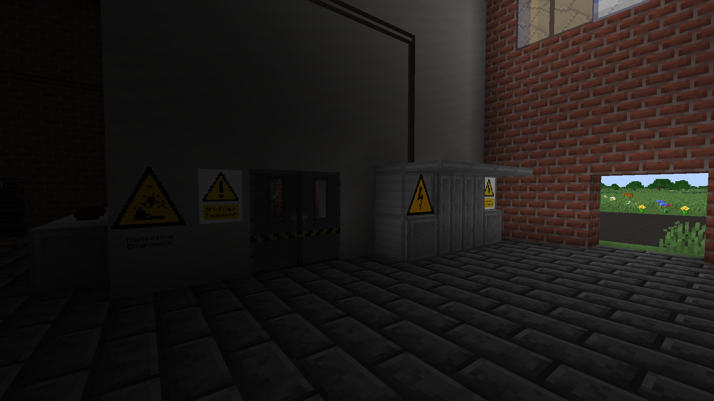
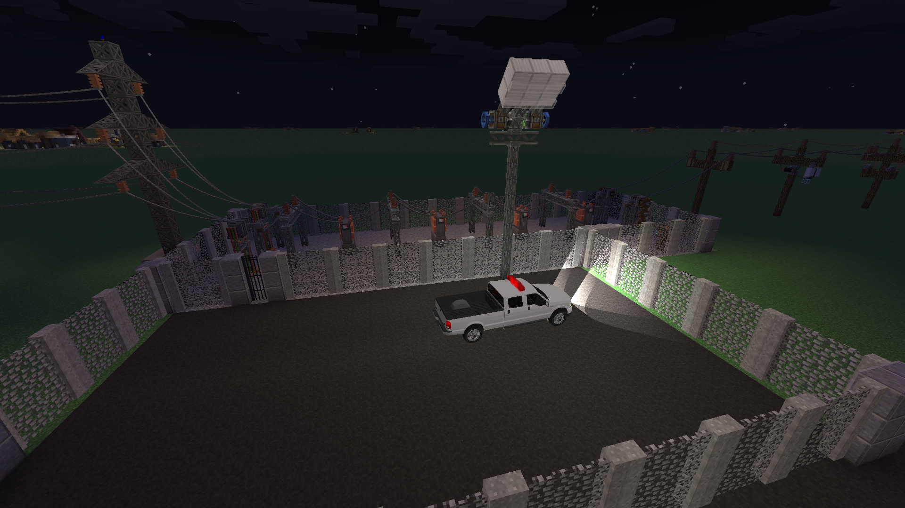
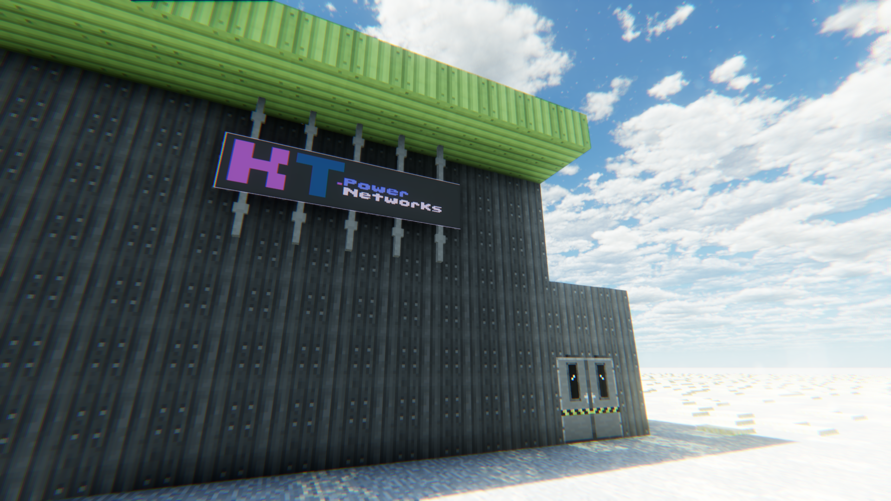

Delivering reliable and modern electricity grid solutions to communities and businesses alike.
Explore Our Services


Customers Served
Distributed Energy
Cities Covered
KT.PowerNetworks is dedicated to delivering safe, reliable, and modern electricity grid solutions for both communities and businesses. Our team applies the highest professional standards in the design, installation, and maintenance of power infrastructure. We strictly follow official UK standards, including BS 7172, ensuring that all equipment, installations, and operational practices meet rigorous safety and performance requirements. Our approach is grounded in UK-based principles for electrical engineering, power distribution, and grid management. Every decision we make—whether planning a substation, installing HV cabinets, or maintaining power networks—is informed by real training and hands-on experience in modern energy systems.
Looking ahead, our goal is to transform KT.PowerNetworks into a fully operational, real-world electricity provider. The knowledge and best practices we apply today come directly from accredited training courses and professional development programs, preparing us to responsibly manage power infrastructure when the opportunity arises.
KT.PowerNetworks also brings immersive powergrid roleplay and simulation experiences to the community. Our scenarios are built on authentic UK regulations and standards, including BS 7671, and replicate real-world operational challenges with accuracy. We emphasize safety, efficiency, and procedural compliance, giving participants a realistic view of modern electricity network management. All our simulations are designed using knowledge from genuine electrical engineering training, preparing enthusiasts and future professionals with insights into practical powergrid operations.
By combining detailed RP with professional principles, we not only create engaging simulations but also ensure that our team—and our audience—develops a strong foundation in real-world power distribution practices. This approach supports our long-term vision: eventually turning KT.PowerNetworks from a simulation-based project into a fully certified, operational electricity network provider.